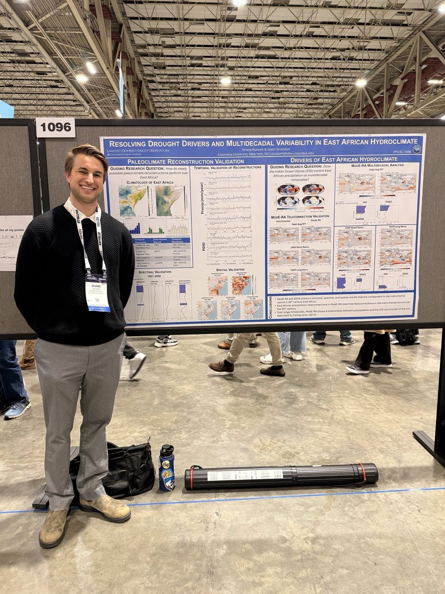

Shane Russett
Climate Dynamics & Paleoclimate Research
Ph.D. Candidate · Earth and Environmental Sciences · Columbia University
I am a Ph.D. candidate studying Earth's paleoclimate! My research focuses on a couple of key questions:
- Are the tools that we use to reconstruct Earth's past climate over the past few centuries any good? How well do they work in areas with fewer proxy records available?
- Can we understand the decadal variability of rain and drought in the past, and how it is connected to ocean-atmosphere cycles like ENSO and the Indian Ocean Dipole?
- How have humans experienced changes in hydroclimate across history?
